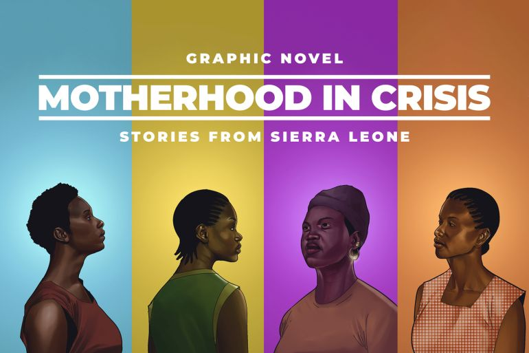

Graphic Novel: Motherhood in Crisis
The Al Jazeera graphic novel Motherhood in Crisis, covered by Laurence Ivil, Alicia Prager, and Saidu Bah, tells important stories about women in Sierra Leone– a part of Africa. It focuses on the dangers of pregnancy and childbirth. What I learned from this graphic novel is that motherhood is not always safe, especially in countries where healthcare is limited.
The stories in the novel come from real women in Sierra Leone. Each woman has a different experience, but they all face serious challenges. Some have to travel very far to reach a hospital. Others just do not have enough money to pay for care. Some women also deal with fear or pressure from their families or communities. These problems made their pregnancies much more dangerous than it should've been. This made me think about how different life is in other parts of the world. In places like the United States, many people have general access to hospitals and doctors. But in Sierra Leone, It seems that isn't always true. Because of this, women are at a much higher risk of dying or losing their children during childbirth. This shows that healthcare is not equal everywhere, and that's a huge problem.
One thing I liked about Motherhood in Crisis is how it uses pictures to tell the story. The drawings help show the emotions of the women, like fear, pain, and hope. This made the stories easier to understand and more emotional. It felt more real than just reading a regular article. The pictures and short text work together to explain serious issues in a simple way.
The interactive features also make this graphic novel different. Instead of flipping pages like a book, you scroll through the story on a screen. You can move from one section to another and focus on one woman’s story at a time. This makes it easier to follow and keeps the reader interested. Another interactive feature is that it is easy to use on both a phone or computer. The layout is simple, and the story is broken into different sections each covering a woman's story. This helps the reader not feel too overwhelmed but rather eager to follow the stories, even though the topic is serious. It also makes it easier for more people to read and learn from it.
Overall, Motherhood in Crisis helped me to understand that pregnancy can be very dangerous in some parts of the world. It showed me how important healthcare is and how unfair it is that not everyone has the same access– leading to their experiences being rather traumatizing. The simple writing, strong images, and interactive design made the very story impactful and easy to follow. It's a meaningful project that raises awareness and helps people learn about real issues affecting women in Sierra Leone.
